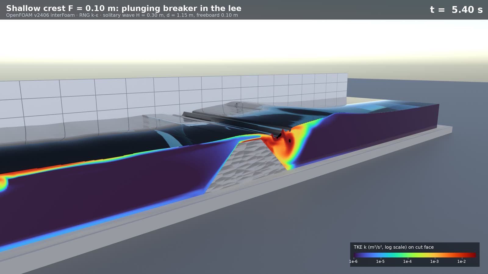

Computational research in action

Submerged BreakwaterSubmerged Breakwater — Solitary Wave Attenuation
An OpenFOAM interFoam (VOF + RNG k–ε) replication of a published FLOW-3D study: a 0.30 m solitary wave crossing a trapezoidal breakwater in 1.15 m of water. The flow replicates, including shoaling over the crest, vortex shedding at the crest corners and the turbulent lee wake. The attenuation is a different story. With 0.5 m of water over the crest the wave does not break, and about 96 % of its energy gets through. The paper's Kt = 0.87 appears only with a much shallower crest. The render extrudes the CFD free surface in Blender Cycles, with log-scale TKE on the cut face.
Freeboard explorer
Drag to change the depth of water over the crest. The bar shows where the incoming wave energy goes in each of five OpenFOAM runs.
- Transmitted
- 92.4 %
- Reflected
- 4.7 %
- Dissipated
- 2.9 %
- Kt (energy)
- 0.961
The wave rides over the crest intact.
 Coupled CFD–DEM
Coupled CFD–DEM
CFD–DEM Fluidized Bed Dynamics
Two-panel visualisation of a coupled Computational Fluid Dynamics & Discrete Element Method (CFD–DEM) simulation of a gas–solid fluidized bed. Left: static gas pressure field overlaid with DEM particle positions. Right: void fraction ε computed from the particle distribution, with particles coloured by vertical velocity magnitude |vz|. Phases A → B → C trace the bed through DEM initialisation, gas injection, and fully fluidized regime.
Dam Break — Free-Surface Flow
High-resolution simulation of a dam-break event using the Volume of Fluid (VOF) method to capture the sharp air–water interface. The water column instantaneously released propagates along a horizontal channel, exhibiting bore formation, wave run-up, and complex splash dynamics. Results validate against classical Ritter and Martin & Moyce analytical benchmarks.
DrivAer Fastback — Vehicle Aerodynamics
External aerodynamics of the DrivAer fastback road-car benchmark at 144 km/h (Re ≈ 1.2 × 10⁷), solved as a transient k–ω SST delayed detached-eddy simulation in OpenFOAM with a moving ground belt and rotating wheels. The centreline slice shows spanwise vorticity — A-pillar and roof shear layers feeding an asymmetric base wake shedding at ~8–9 Hz. Mean drag Cd ≈ 0.31, inside the published DrivAer reference band.
HCCI Engine — Compression Autoignition
A 2D HCCI (homogeneous-charge compression-ignition) run — a lean n-heptane/air charge compressed by a moving piston until it autoignites without a spark. A custom OpenFOAM solver couples detailed chemistry to a moving (ALE) mesh, using a 90-species skeletal mechanism DRGEP-reduced from the 544-species LLNL reference and validated against Cantera to under 1 % on 0-D ignition delay. It captures the two-stage NTC cool-flame then main autoignition at −19.8° ATDC (peak 2293 K, 44.3 bar); the OH radical marks the ignition front.